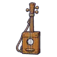 เครื่องดนตรีลังไม้ | 1 | 40 | ไม่มีธาตุ | แครอทจอมพุ่ง 0.25% |
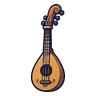 พิณน้ำผึ้ง | 1 | 37 | ไม่มีธาตุ | อาวุธเริ่มต้นของสาย (ได้ตอนเปลี่ยนอาชีพ) |
| เครื่องดนตรีฟักทองจอมซน | 6 | 38 | ไม่มีธาตุ | ฟักทองจอมซน 0.12% |
 เครื่องดนตรีไม้เมเปิล เครื่องดนตรีไม้เมเปิล | 9 | 42 | ไม่มีธาตุ | สไลม์น้ำผึ้ง 0.25% |
 เครื่องดนตรีซังข้าวโพด เครื่องดนตรีซังข้าวโพด | 13 | 38 | ดิน | อีกาขโมยข้าวโพด 0.12% |
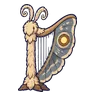 เครื่องดนตรีผีเสื้อราตรี | 16 | 36 | ลม | มดบิน 0.06% |
 เครื่องดนตรีกระดองเต่า เครื่องดนตรีกระดองเต่า | 18 | 42 | น้ำ | เต่าตะไคร่ขี้โมโห 0.25% |
 เครื่องดนตรีโหลหิ่งห้อย เครื่องดนตรีโหลหิ่งห้อย | 21 | 36 | ศักดิ์สิทธิ์ | โครงกระดูกพลธนู 0.06% |
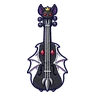 เครื่องดนตรีราชาค้างคาว | 24 | 49 | มืด | ราตรีราชาค้างคาว 0.5% |
 เครื่องดนตรีไม้โอ๊กทองเหลือง เครื่องดนตรีไม้โอ๊กทองเหลือง | 26 | 67 | ไม่มีธาตุ | เห็ดหมอ 0.25% |
 เครื่องดนตรีหมาป่าเงาจันทร์ เครื่องดนตรีหมาป่าเงาจันทร์ | 29 | 60 | มืด | ค้างคาวรัตติกาล 0.12% |
 เครื่องดนตรีหยดน้ำค้าง เครื่องดนตรีหยดน้ำค้าง | 31 | 57 | น้ำ | สไลม์น้ำใส 0.06% |
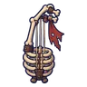 เครื่องดนตรีซี่โครงทหาร | 33 | 66 | ไม่มีธาตุ | นกฮูกหิน 0.25% |
 เครื่องดนตรีกะละมังชาวไร่ เครื่องดนตรีกะละมังชาวไร่ | 35 | 60 | ไม่มีธาตุ | ชาวบ้านกลวง 0.12% |
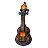 เครื่องดนตรีกองไฟ | 37 | 57 | ไฟ | โกเลมผลึกแตกตัว 0.06% |
 เครื่องดนตรีตอไม้ผี เครื่องดนตรีตอไม้ผี | 40 | 67 | ไม่มีธาตุ | อีกายักษ์ 0.25% |
 เครื่องดนตรีแมงป่องแดง เครื่องดนตรีแมงป่องแดง | 42 | 60 | ไฟ | แมงป่องแดง 0.12% |
 เครื่องดนตรีภูตกระดิ่งลม เครื่องดนตรีภูตกระดิ่งลม | 44 | 57 | ลม | ภูตกระดิ่งลม 0.06% |
 เครื่องดนตรีปีกกระเบนฟ้า เครื่องดนตรีปีกกระเบนฟ้า | 44 | 57 | ลม | กระเบนฟ้า ร่างม่วงอสนี 0.12% |
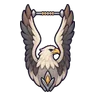 เครื่องดนตรีอินทรีพายุ | 45 | 60 | ไม่มีธาตุ | แมงป่องแดง ร่างทองแดง 0.12% |
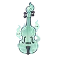 เครื่องดนตรีผีดวงไฟ | 47 | 57 | วิญญาณ | คนงานเหมืองผี 0.06% |
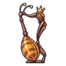 เครื่องดนตรีนางพญามด | 50 | 78 | ดิน | รังนางพญามด 0.5% |
 เครื่องดนตรีราชาเห็ด เครื่องดนตรีราชาเห็ด | 50 | 78 | พิษ | ราชาเห็ดเรืองแสง 0.5% |
 เครื่องดนตรีไม้ดำฝังมุก เครื่องดนตรีไม้ดำฝังมุก | 52 | 92 | ไม่มีธาตุ | ยุงยักษ์ 0.25% |
 เครื่องดนตรีมือกัปปะ เครื่องดนตรีมือกัปปะ | 55 | 82 | น้ำ | หมาป่าหิมะ 0.12% |
 เครื่องดนตรีภูตหมอกเงา เครื่องดนตรีภูตหมอกเงา | 58 | 78 | มืด | ผู้จุดตะเกียงกลวง 0.06% |
 เครื่องดนตรีคางคกพิษ เครื่องดนตรีคางคกพิษ | 61 | 82 | พิษ | คางคกพิษ 0.12% |
 เครื่องดนตรีโกเลมหินแดง เครื่องดนตรีโกเลมหินแดง | 63 | 86 | ดิน | แองคิโลซอร์หางค้อน 0.25% |
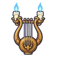 เครื่องดนตรีเชิงเทียนวิญญาณ | 65 | 78 | วิญญาณ | วิญญาณเทียน 0.06% |
 เครื่องดนตรีซาลาแมนเดอร์ เครื่องดนตรีซาลาแมนเดอร์ | 67 | 82 | ไฟ | ซาลาแมนเดอร์ 0.12% |
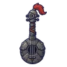 เครื่องดนตรีอัศวินกระดูก | 70 | 82 | ไม่มีธาตุ | หุ่นระฆังจ่าฝูง 0.12% |
 เครื่องดนตรีกวางขาว เครื่องดนตรีกวางขาว | 73 | 78 | ศักดิ์สิทธิ์ | ผู้เฝ้าพื้นแก้ว 0.06% |
| เครื่องดนตรีราชาสุสาน | 75 | 107 | มืด | บัลลังก์ราชาสุสาน 0.5% |
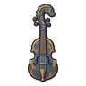 เครื่องดนตรีหัวเรืองูทะเล | 76 | 104 | น้ำ | หัวเรืองูทะเล 0.12% |
 เครื่องดนตรีหีบหมุนช่างหลวง เครื่องดนตรีหีบหมุนช่างหลวง | 77 | 110 | ไม่มีธาตุ | ลูกนกฮูกจ่าฝูง 0.25% |
 เครื่องดนตรีค้างคาวเปลวไฟ เครื่องดนตรีค้างคาวเปลวไฟ | 80 | 104 | ไฟ | ค้างคาวเปลวไฟ 0.12% |
 เครื่องดนตรีต้นไม้ยักษ์โบราณ เครื่องดนตรีต้นไม้ยักษ์โบราณ | 82 | 116 | ดิน | ต้นไม้ยักษ์โบราณ 0.25% |
 เครื่องดนตรีแร็พเตอร์ใบไม้ เครื่องดนตรีแร็พเตอร์ใบไม้ | 84 | 99 | ลม | แร็พเตอร์ใบไม้ 0.06% |
 เครื่องดนตรีด้วงแรดยักษ์ เครื่องดนตรีด้วงแรดยักษ์ | 86 | 111 | ไม่มีธาตุ | ด้วงแรดยักษ์ 0.25% |
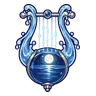 เครื่องดนตรีทะเลสาบจันทร์ | 88 | 99 | น้ำ | หุ่นสปริงระเบิด 0.06% |
 พิณรากในหมอก พิณรากในหมอก | 90 | 109 | ลม | บอสผู้ถูกรากสิง |
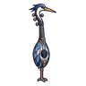 เครื่องดนตรีนกกระสาเงา | 91 | 104 | ไม่มีธาตุ | แองคิโลซอร์หางค้อน 0.12% |
 เครื่องดนตรีรูปปั้นผ้าคลุมหน้า เครื่องดนตรีรูปปั้นผ้าคลุมหน้า | 92 | 99 | วิญญาณ | รูปปั้นผ้าคลุมหน้า 0.06% |
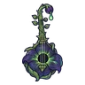 เครื่องดนตรีดอกไม้พิษราตรี | 94 | 99 | พิษ | อิมป์พ่นลาวา 0.06% |
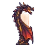 เครื่องดนตรีมังกรลาวา | 97 | 136 | ไฟ | หัวใจมังกรลาวา 0.5% |
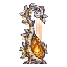 เครื่องดนตรีเพลงกองไฟนิรันดร์ | 99 | 147 | ไฟ | ดรอปทั่วโลก Lv 90+ |